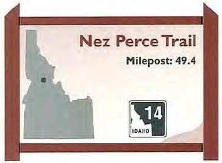

An old Indian trail connected Elk City with mines in Montana
when Idaho's gold rush spread there in 1862.
Following a route developed by Nez Perce buffalo hunters, a
host of miners and packers ascended a series of ridges
overlooking the deep Salmon and Clearwater river canyons
on their way to new gold fields. Long after local Indians and
miners ceased to travel there, a single-lane forest road was
constructed near that traditional Nez Perce thoroughfare in
1934.